Modern Recurrent Neural Networks
Basic RNNs, GRU, and Seq2Seq
Objectives
- This project aims to provide students with hands-on experience in developing Recurrent Neural Networks (RNNs) by implementing and experimenting with various RNN architectures. By following a structured progression of tasks, students will explore key advancements in RNNs.
Part 1: Basic RNNs
Task 1: Optimize the performance of a basic RNN by tuning key hyperparameters.
- Adjust the following hyperparameters: number of epochs, number of hidden units, number of time steps in a minibatch, learning rate.
- Goal: Achieve the lowest possible perplexity (evaluation metric) on the validation set using the implemented RNN architecture.
- Sticking with this simple RNN architecture, what's the best accuracy (low perplexity) you can get? Discuss your results and provide the training and validation perplexity plots of your top-performing configurations (≥3).
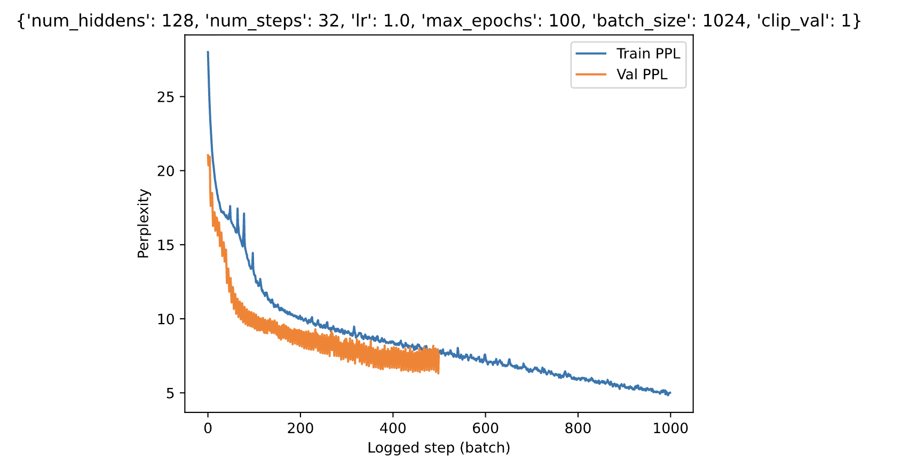
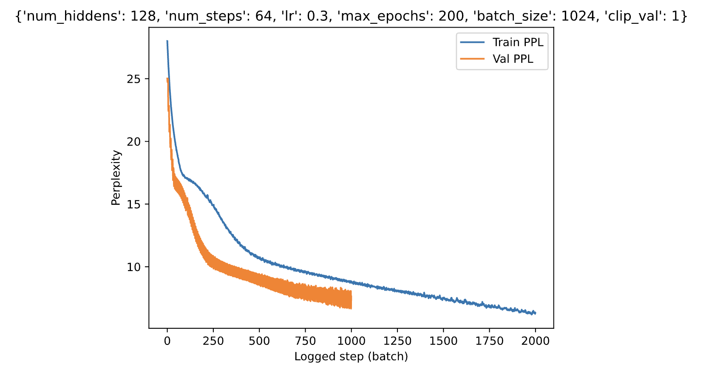
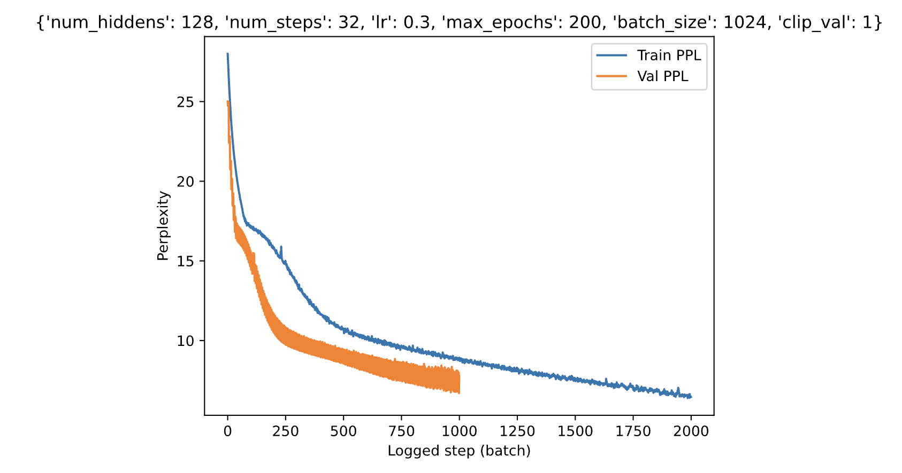
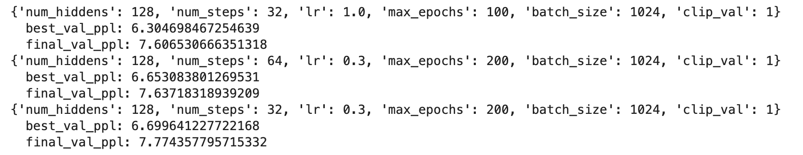
For task 1 I decided to test 36 different configurations. For num_hiddens I varied around 128 and 256 to have a balanced model capacity, and a more expressive, but slower and with risk of overfit model capacity. For num_steps I played with 32 and 64, this to shorter contexts as well as larger ones for better long term modeling. Then for learing rate I used 1.0, an agressive approach, 0.5, which was something more typical, and 0.3, a moderate, more conservative learning rate. Finally I tried using 50, 100 and 200 epochs to analyze whether thare was no convergance or overfiting involved. After analyizing all these models, I found the top 3 performers which you can see on the plots above. From the configuration figure you can see that 128 was the sweet spot for num_hiddens, that num_steps doesnt relaly make a lot of difference, that the best learning rate is probably 0.3, ensuring a short but stable convergance, and that 50 epochs is definatly not enough, an rather 200 epochs is closer to the best possible results. The lowest perplexity that was achieved with these experiments was 6.304, which is a really good result.
Task 2: Investigate the impact of gradient clipping and different activation functions on model training stability and performance.- Try to train the RNN model without clipping the gradient, plot the training and validation perplexity and discuss the results.
- Replace the activation function with ReLU and plot the training and validation perplexity. Discuss if we still need gradient clipping, or should we use both ReLU and gradient clipping?
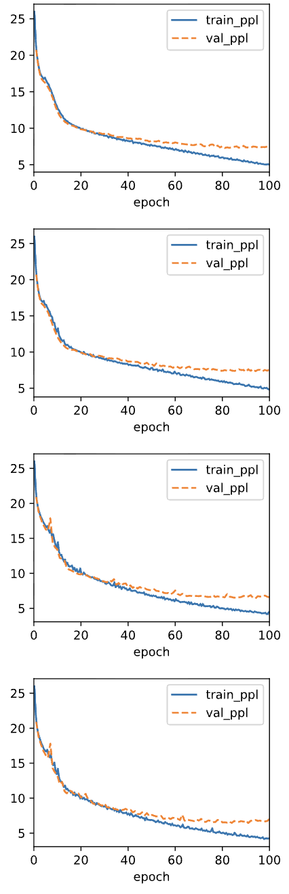
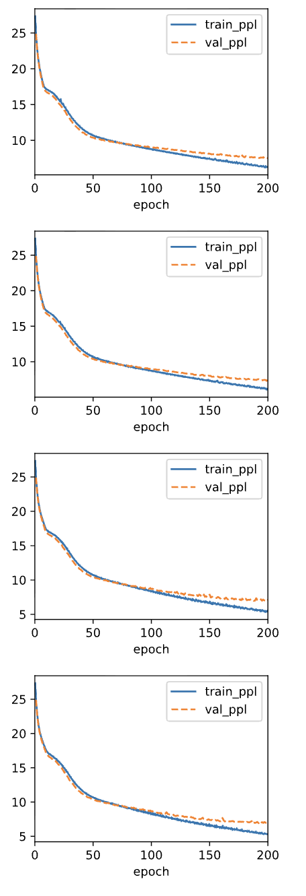
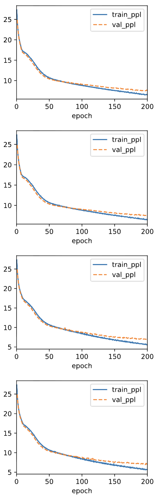
For this ablation study, when we trained the RNN with tahn but without gradient clipping, the model remained mostly stable but we can notice slightly more oscilation in training perplexity, also some higher validation perplexity compared to the clipped version, and finally, we see a larger train-val gap in longer runs. From this we can conclude that even though tahn bounds activations between -1 an 1, gradients can still grow large during BPTT. Without clipping, the model boceomes less stable and generalies slightly worse. On the other hand, tahn with gradient clipping achieved the lowest val prepexity and the smoothest convergence across all three top configs from task 1. In generall, gradient clipping helps prevent exploding gradients in long sequences, stabilizing the updates and improving generalization. When we replaced tahn with relu and also kept gradient clippings, training perplexity decreased fast in early epochs. However, validation perplexity was higher than with tahn and clip; some configs showed instability compared to tanh. Relu doesnt bound activations, so hidden states can grow very large. While clipping removes exploding gradietns, the lack of bounded actiavtions can still affect stability. When we did relu without clipping, we saw the worst performing configuration. There were larger fluctuations in training perplexity, higher val perplexity, and in longer runs, some instability. This confrims that relu alone is not enough for stable training in RNNs, especially withpout gradient control. Since relu allows unbounded positvie activations, repeated multiplications through time can amplify gradients, leading to unstable updates. In genral, relu with clipping preformed better than relu without clipping, but no better than tahn woth clipping.
Part 2: GRU
Task 1: Hyperparameters tuning (e.g., number of hidden units, learning rate) and analyze their influence on running time, perplexity, and the output sequence. Discuss your results and provide the training and validation perplexity plots of your top-performing configurations (≥3).
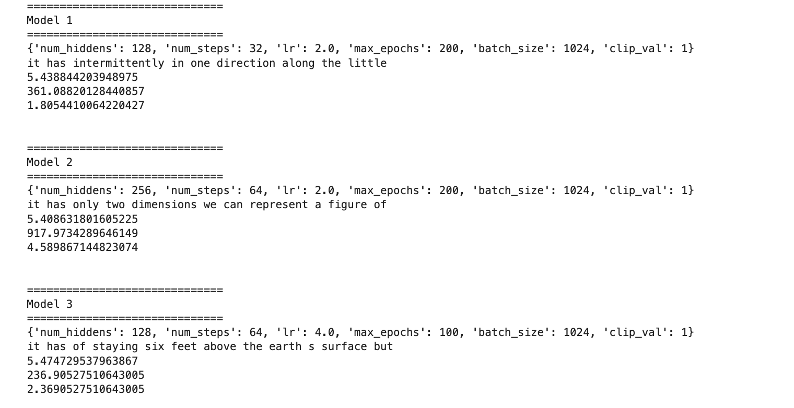
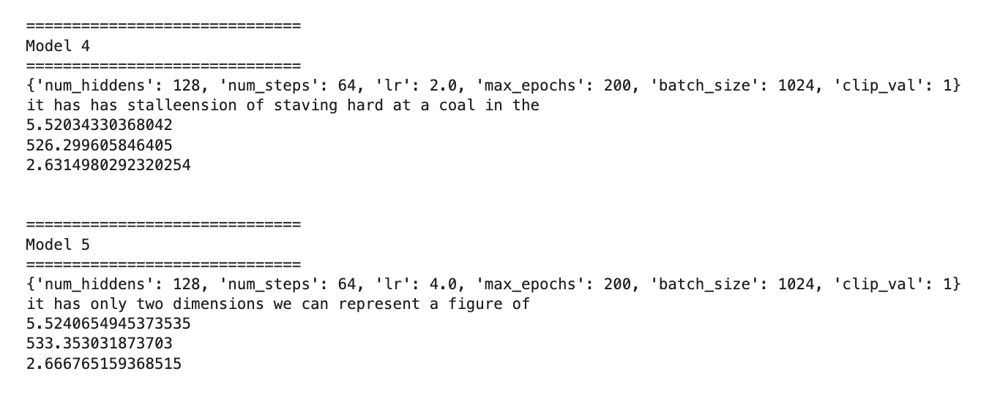
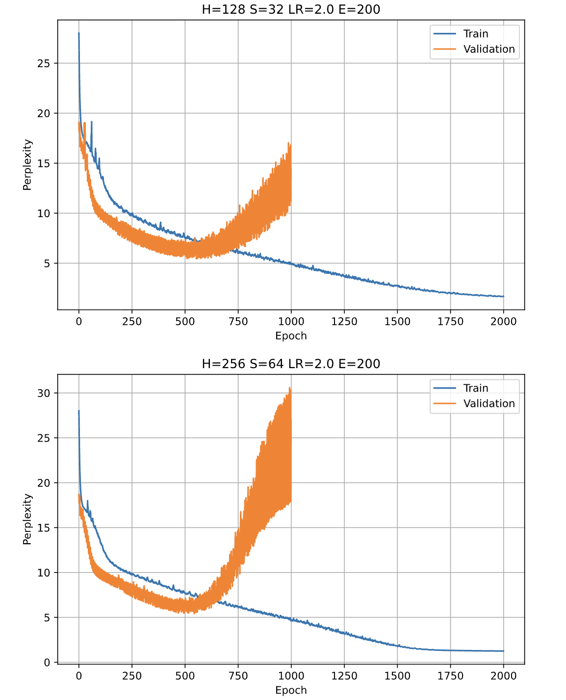
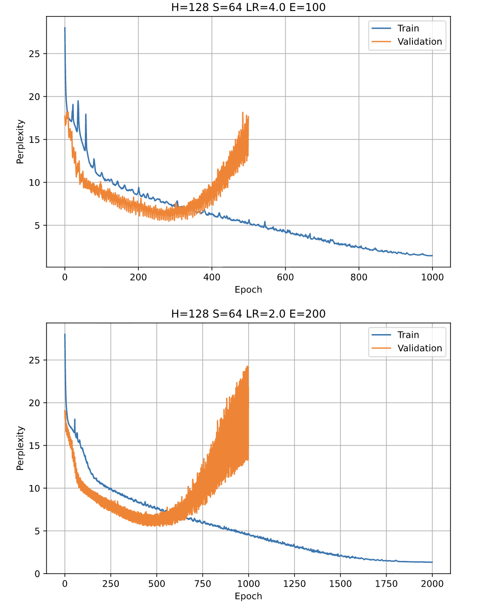
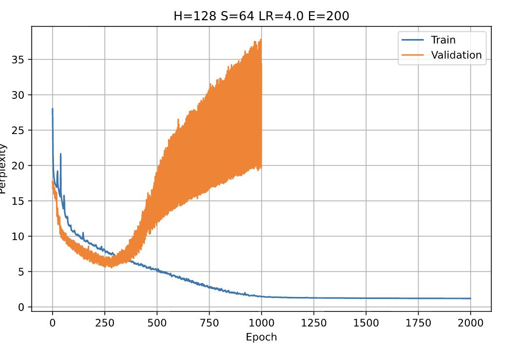
In this experiment, I evaluated the effect of number of hidden units, learning rate, and training epochs on model performance, training time, and generated text quality. The best configuration in terms of validation perplexity reached a value of approximately 5.41 using 256 hidden units, sequence length 64, learning rate 2.0, and 200 epochs. However, this configuration required significantly more training time, which was over 900 seconds. Another configuration with 128 hidden units, sequence length 32, learning rate 2.0, and 200 epochs achieved a almost perplexity of 5.44, but requiring less than half the total training time. This suggests worse returns when increasing model size and sequence length by a lot. Learning rate had a strong impact on convergence. The models trained with learning rate 2.0 consistently achieved the lowest perplexities. A higher learning rate of 4.0 converged quickly but was slightly less stable, while learning rate 1.0 underperformed across configurations, resulting in higher perplexity values. Increasing the number of epochs from 50 or 100 to 200 improved validation perplexity, indicating that the GRU benefits from longer training. Switching to text generation, the top performing models produced more coherent and grammatically structured sequences, for example “it has intermittently in one direction along the little" and “it has only two dimensions we can represent a figure of”, while lower performing models showed a lot of repetition and poor structure, like repeated “the the the”. This shows that lower perplexity is realated to improved language modeling quality. Overall, the results show that increasing hidden size and sequence length can improve performance, but the gains come with additional computational cost. A learning rate of 2.0 and longer training duration provided the best balance between convergence stability and final performance. The configuration with 128 hidden units and 32 time steps had the most efficient tradeoff between perplexity and training time.
Task 2: Ablation study on GRU gates. Only reset gate active: Ignore the update gate; Only update gate active: Ignore the reset gate. What happens to the performance when either gate is missing? Plot the training and validation perplexity, and provide example output sequences for each variant. Discuss the results.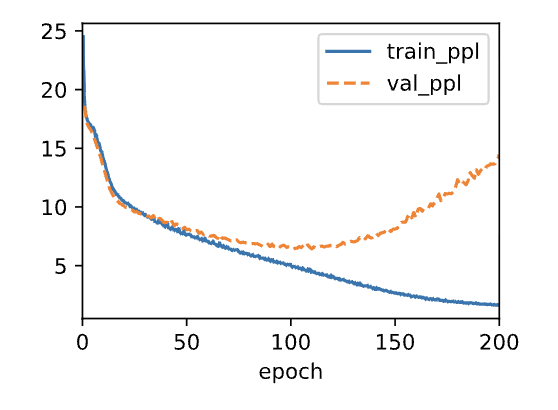
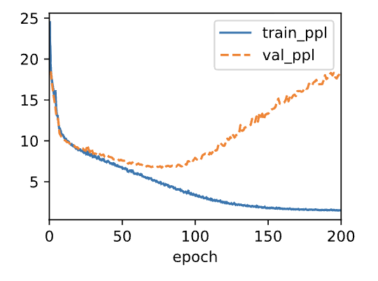
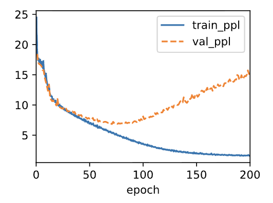
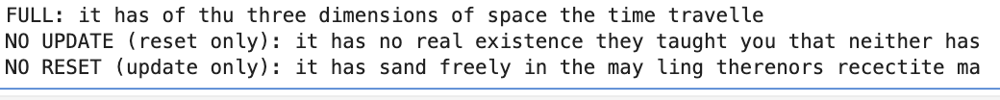
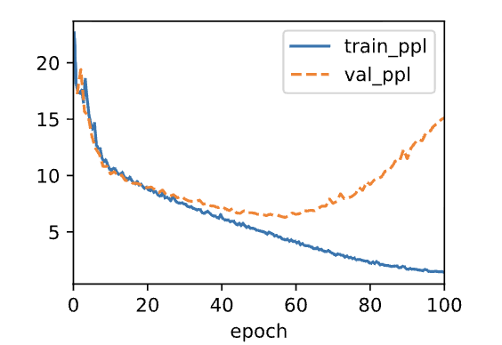
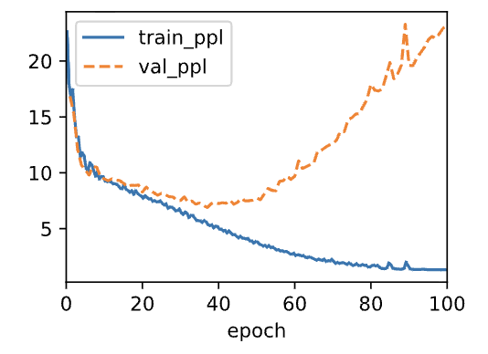
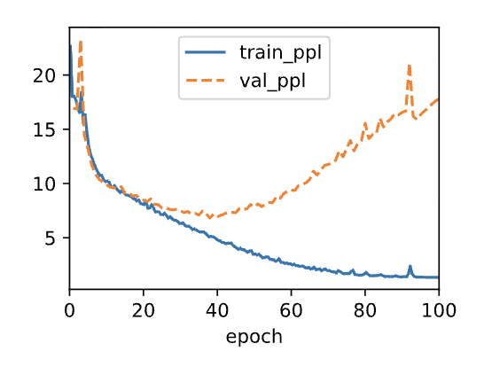
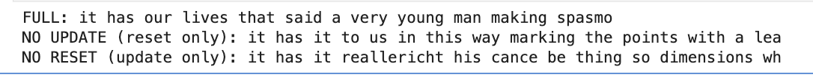
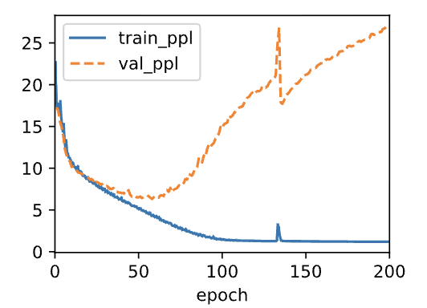
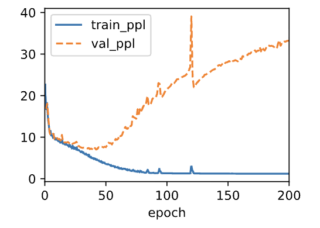
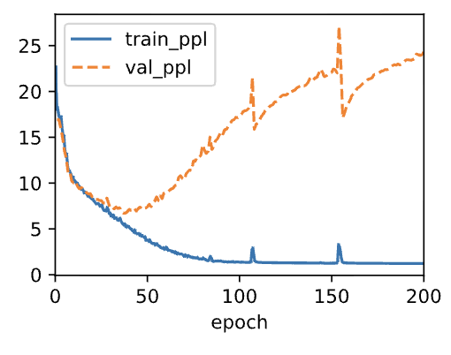
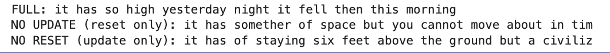